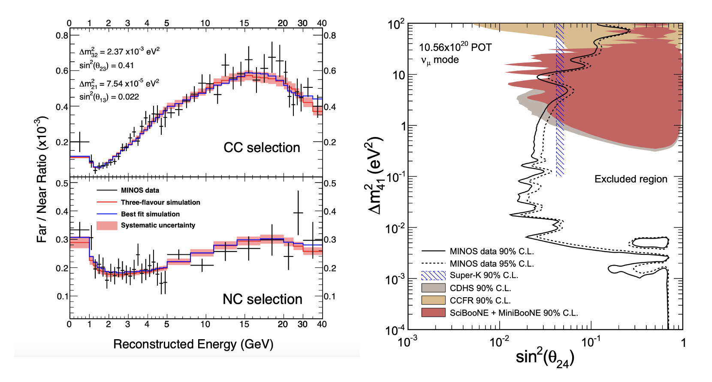

Sterile neutrinos are elusive, hypothetical particles that don’t interact with matter like regular neutrinos, making them a fascinating yet challenging piece of the cosmic puzzle. Our research focuses on detecting their subtle effects in oscillation experiments, potentially revolutionizing our understanding of particle physics. How the long baseline experiment is looks for sterile neutrino is outlined here, Sterile PRL.
As part of our experiments, we are also developing the application specific integrated circuit in collaboration with our Electrical Engineering department's Solid State Lab at IIT Kanpur . Experiments like DUNE and ANNIE use state-of-the-art modern particle detectors. At IIT Kanpur, we are also planning to engage in studies of these advanced detector technologies. One such photodetector currently used by ANNIE is the Large Area Picosecond Photodetectors (LAPPD) LAPPDs .
DUNE, with its LArTPC technology, would record more than 3500 events, 3300 by the CC channel, and 200 by the ES channel for the assumed GVKM supernova neutrino flux. The CC interaction distribution has a peak around 30 MeV, while ES interactions have a peak around 20 MeV. Since neutrinos start streaming from the core of the supernova much earlier than the photons, this can be used for pointing the supernova as part of the SNEWS program as soon as neutrinos are detected. The preliminary idea of how DUNE helps supernova pointing is published here, Supernova PRD.
One of the main challenges in neutrino-nucleus interaction studies is the limited understanding of final-state interactions (FSIs), the complex intranuclear processes that occur after the initial neutrino interaction. These interactions can alter the number, type, and energy of outgoing particles, making it difficult to accurately reconstruct the neutrino energy and event topology. ANNIE aims to measure neutron detection; specifically, we will measure the neutrino multiplicity as a function of outgoing lepton in a CCQE interaction and then correlate the muon momentum to the number of neutrons.The prelinary measurment of neutron capture is done with ANNIE data, Michael's Thesis.
We are planning to setup lab to test the MPPC arrays to explore their three characteristics are single photoelectron charge, crosstalk, and electrical gain, and then eliminated the background noise, including possible sources of photon and thermal particles in a dark environment. The details of the testing is outlined here MPPC testing.